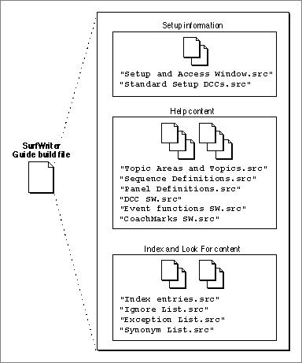

Getting Started
Figure C-1 illustrates the structure of the source files for SurfWriter Guide. These source files can be grouped into three distinct areas: files that specify setup information, files that provide help content, and files that provide Index and Look For content.Figure C-1 The organization of the source files for SurfWriter Guide

The rest of this section describes the files used to specify the initial setup information and gives explanatory text where necessary. "Help Content" beginning on page C-17 and "Index and Look For Content" beginning on page C-45 describe other files used to create SurfWriter Guide and give additional information related to the specific commands specified in the source files.
SurfWriter Guide Build File
The source files for SurfWriter Guide are organized in small sections, to make the files convenient to use and easier to manage. For example, separate files are used for SurfWriter Guide's index terms, synonym list, ignore list, and exception list. Similarly, the source files containing sequence and panel definitions are organized so that their information can be readily accessed.The build file for SurfWriter Guide is shown in Listing C-1. The rest of the sections in this appendix elaborate on these files.
Listing C-1 A build file ("Build file SURF.src" file)
#the following file specifies event, nav button, & format definitions # plus prompts, coachmarks, Help menu info, and # the type of access window <Include> "Setup and Access Window.src" #the following file specifies the standard context checks <Include> "Standard Setup DCCs.src" #the following file specifies application-defined context checks <Include> "DCC SW.src" #the following file specifies application-defined event functions <Include> "Event functions SW.src" #the following file specifies coachmarks <Include> "CoachMarks SW.src" #the following files specify the guide file content <Include> "Topic Areas and Topics.src" <Include> "Sequence Definitions.src" <Include> "Panel Definitions.src" #use the following file only if you have an XTND translator installed #<Include> "Panels with StyleInfo.src" #the following files specify the guide file index and Look For content <Include> "Index entries.src" <Include> "Ignore List.src" <Include> "Exception List.src" <Include> "Synonym List.src"Using Standard Files
Included on the CD-ROM that accompanies this book are two files that are separate from the SurfWriter Guide source files but that are commonly used in creating guide files. These two files, Standard Setup and Standard Resources, are in the Standard Includes folder, which is located in the Apple Guide:Authoring folder. These two standard files are typically used as templates. For example, SurfWriter Guide uses information from these two files and customizes the information when necessary, as described in "Customizing the Setup Information" beginning on page C-11.The Standard Setup File
The Standard Setup file contains the Guide Script commands that give basic information about a guide file, such asBy editing the Standard Setup file, you can quickly create a guide file that already has standard elements (such as the Huh? and GoStart buttons) defined and customize specific elements (such as your guide file's menu item, application logo, howdy text, and type of access window) as appropriate for your guide file.
- the name of the guide file as it appears in the Help menu
- the balloon text for the guide file's menu item
- the application associated with the guide file
- the type of access window (full, single, or simple) and the access screen that is initially active (howdy, Topics, Index, or Look for)
- howdy text for the initial access window
- application logo information for the access window
- Finder version resources (to display in the Get Info box of the guide file)
- prompt set definitions, including the default prompt set
- navigation bar button definitions, including the Huh? and GoStart buttons, as well as the default navigation bar button set
- format definitions, including the Full, Tag, and Body formats
- specifications of the maximum and minimum height allowed for a panel
- event definitions for the Huh? button ("DoHuh"), the GoStart button ("GoStart"), and the Continue or OK buttons in Continue and Oops panels ("GoBack")
- context check definitions for the external modules provided in the Standard Resources file
The Standard Resources File
The Standard Resources file contains:
'PICT'resources for the Continue, Huh?, and GoStart buttons- templates of
'PICT'resources for an application logo'extm'resources (external modules) containing the code for the context checks defined in the Standard Setup fileCustomizing the Setup Information
The file "Setup and Access Window.src" specifies the basic setup information for SurfWriter Guide. It is based on the Standard Setup file, with additions that are specific for this guide file. Note that the file "Standard Setup DCCs.src" contains the context check definitions from the Standard Setup file.Listing C-2 through Listing C-6 show the "Setup and Access Window.src" file.
Navigation Information and Formats
As shown in Listing C-2, the "Setup and Access Window.src" file first imports the resources from the Standard Resources file, then defines the same events, navigation buttons, and formats as the Standard Setup file. It also defines additional formats specific to SurfWriter Guide.Listing C-2 Events, navigation buttons, and formats (from the "Setup and Access Window.src" file)
<Resource> "Standard Resources", ALL #these events & definitions are also defined in "Standard Setup" <Define Event> "DoHuh", 's***', 'help', 'dhuh' <Define Event> "GoStart", 's***', 'help', 'stac' <Define Event> "GoBack", 's***', 'help', 'gobk' <Define Nav Button> "Huh?", 1101, 1111, 1121, DIMMABLE <Define Nav Button> "GoStart", 1103, 1113, 1123, GoStart() <Define Nav Button Set> "Std nav bar", "GoStart", "Huh?" <Define Format> "Tag", Column(6,0,54),"Espy Sans Bold",10,plain,, right, false <Define Format> "Body", Column(6,65,330),"Espy Serif",10,plain,, left, true <Define Format> "Full", Column(6,11,330),"Espy Serif",10,plain,,Left, false #if you use styles in your help content and your source files are # styled text, omit "plain" from format <Define Format> "Full2",Column(6,11,330),"Espy Serif",10,,,Left,false <Default Format> "Full" #define other formats that specify style information (if your # source files are plain text rather than styled text) # (these formats are used only with the "CreateCustomIntro" panel) <Define Format> "PlainText", Column(6,7,330),"Espy Serif", 10,plain,,,false <Define Format> "UnderlineText", Column(20,41,115),"Espy Sans Bold", 10,underline,,,false <Define Format> "PlainTextReset", Column(20,116,330),"Espy Serif", 10,plain,,,false <Define Format> "PlainTextNormal", Column(34,7,330),"Espy Serif", 10,plain,,,falsePrompt Sets
Listing C-3 defines the prompt sets used by SurfWriter Guide.Listing C-3 Prompt sets (from the "Setup and Access Window.src" file)
#Define your prompt sets. #Provide four strings to <Define Prompt Set>; the strings specify # prompts for: # 1. the first panel in a sequence # 2. any middle panel in a sequence that does not have # radio buttons, checkboxes, or standard buttons # 3. the last panel in a sequence # 4. any panel with controls (radio buttons, checkboxes, # or standard buttons) # <Define Prompt Set> "standard" , "To begin, click the right arrow.", "Do this step, then click the right arrow.", "Do this step, then you're done.", "Make your choice, then click the right arrow." <Define Prompt Set> "standard2" , "To begin, click the right arrow.", "Click the left arrow to go back or the right arrow to continue.", "That's all, you're done!", "Make your choice, then click the right arrow." <Default Prompt Set> "standard2" <Define Prompt Set> "introprompts" , "To begin, click the right arrow. "," ", " ", " " <Define Prompt Set> "doThisprompt" , "Do this step, then click the right arrow.", "Do this step, then click the right arrow.", " ", "Do this step, then click the right arrow." <Define Prompt Set> "YouAreDone" , " ", " ","That's all, you're done.", " " <Define Prompt Set> "YouAreDone2" , " ", " ", "That's all, you're done.", "That's all, you're done." <Define Prompt Set> "continuePrompt" , "After the dictionary opens, click Continue.", "After the dictionary opens, click Continue.", "After the dictionary opens, click Continue.", " " <Define Prompt Set> "Defn&HuhPrompts" , "Read this information, then you're done.", "Read this information, then you're done.", "Read this information, then you're done.", " "Help Menu Information
Listing C-4 defines the information specific to SurfWriter's Help menu (the menu item text and balloon text for the guide file).Listing C-4 Help menu information (from the "Setup and Access Window.src" file)
# *************** Help menu information ************************* #define how the name of this guide file should appear in # SurfWriter's Help menu #the menu item name is "SurfWriter Guide" #the guide file for this menu item is of type HELP #if you use the cmd like this, it does NOT give you Cmd-Key symbol # or ? in the Help menu #<Help Menu> "SurfWriter Guide", HELP #therefore, specify the command like this <Help Menu> "SurfWriter Guide", HELP, "?" #use this command to specify the text that appears for this guide file # in your application's Help menu; that is, when the cursor is in # the SurfWriter Guide menu item and Balloon Help is on, # the Finder displays this text in a help balloon <Balloon Menu Text> "Provides information and instructions to assist you in accomplishing specific tasks with SurfWriter" #To specify that your guide file appear only in the Help menu # of your application, use this command and specify your application's # creator, for example: # <App Creator> 'WAVE'Access Window Information
Listing C-5 defines the access window information for SurfWriter Guide. Note that because this source file specifies the <App Logo> command, the Standard Resources file must not contain'PICT'resources with resource IDs 501 and 502 (these resources have been removed from the Standard Resources file provided in the Example Source Files Appdx C folder). This guide file uses a Full Access window with howdy text initially active, as shown by the <Startup Window> command.Listing C-5 Access window startup (from the "Setup and Access Window.src" file)
# ***********Access window startup information**************** #Define either SurfWriter app logo or app text. #Apple Guide displays the app logo or app text # in the upper-left corner of SurfWriter Guide's Full Access window. #<App Text> "SurfWriter Guide" #if you choose to use app logo instead, # define the filename that contains a PICT of your app's logo # for example, <App Logo> "MyAppLogoPict", "MyAppLogoB&WPict" #(Note that the file "Standard Resources" contains templates with # PICT resource IDs 501 and 502 that you can modify appropriately and # use as the application logo picture associated with your guide). #If you modify the PICT resources with IDs 501 and 502 then import the # "Standard Resources" file, you can omit the <App Logo> command. #If you store your app logo in a separate file, # then remove the PICT resources with resource IDs 501 and 502 # from the "Standard Resources" file. <App Logo> "SurfWriter App Color Logo", "SurfWriter App B&W Logo" #define startup window, this is the window that Apple Guide # first displays when the user chooses the menu item SurfWriter Guide # If you specify a full access window, you can display HOWDY info # OR you can specify which of the three buttons is initially active # this example specifies HOWDY <Startup Window> FULL, HOWDY #You can choose FULL, SINGLE, or PRESENTATION as the startup window #Full access windows allow topics, index, and look for, and Howdy #Single access windows allow only topics and howdy #Presentation allows a single sequence only #define the text for the Howdy screen <Define Text Block> "Howdy Text" Welcome to personal help for SurfWriter. To start, click Topics, Index, or Look For. Topics shows general categories and Index lists key words. Look For lets you search for help according to key words you type. To learn basic skills, choose the Tutorial item from the ? menu. <End Text Block> #now specify the defined howdy text <Howdy> "Howdy Text"Finder Version Information
Listing C-6 provides customized strings for the Finder version resources.Listing C-6 Finder version information (from the "Setup and Access Window.src" file)
# *****************Finder file information********* #Specify the version strings that appear in the Finder Get Info window # for your guide file <Version> "SurfWriter Guide 1.0 ©Apple Computer, Inc.", "1.0"